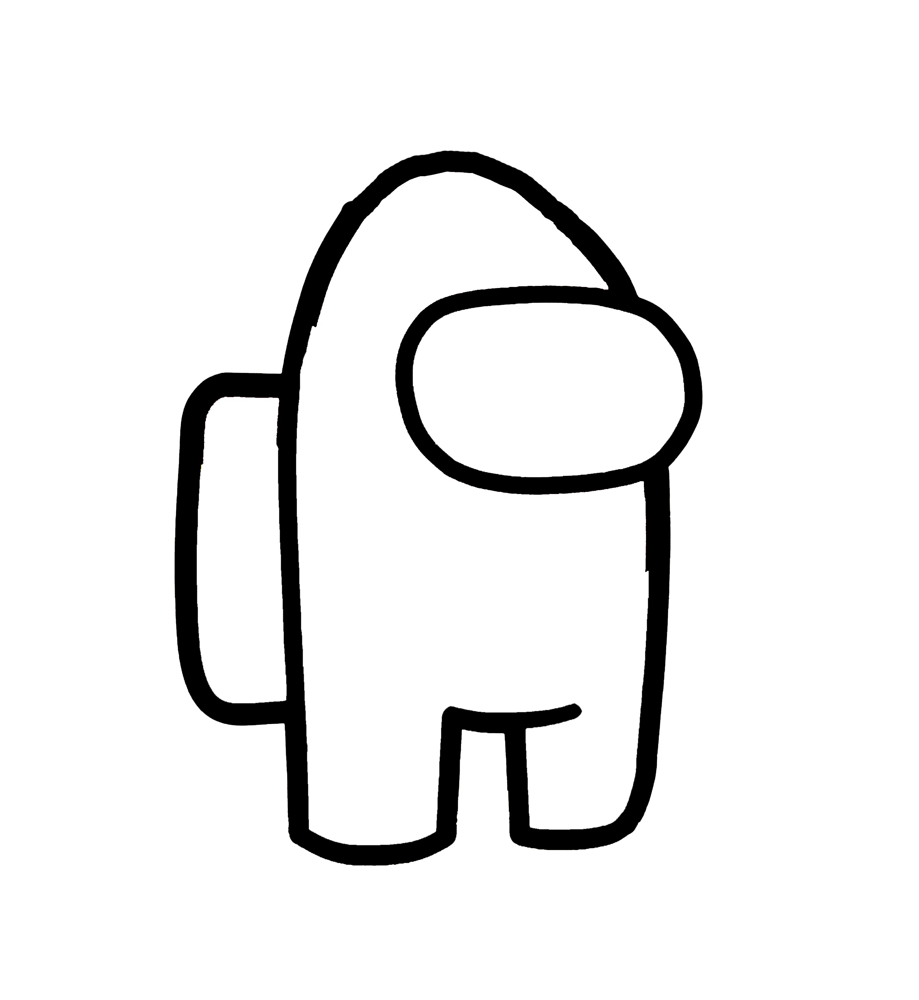

Director: Evan
Main Villain(s): Ender Dragon Family
MINECRAFT: The Ultimate Adventure
Super Season 1
Season 1:
Once upon a time, there was a Minecraftian called Steve. He had a friend named Alex. He had a crush on her since -69th Grade, but she liked this Level 1 Crook John. John decided to prove his love by defeating the Level 100 Boss Ender Dragon with her. But John is doo-doo at fighting and failed. The ender dragon captured Alex. So Steve was like “.” So he YEETED the ender dragon really hard and won, but he forgot about the dragon’s son and left the egg at the End. Alex cried out, “NOOOOO JOOOOOOOOHN,” because he died while he was fighting the ender dragon because he was a noob at this kind of stuff. But Steve cheered her up through the power of “TRUE LOVE!!”. They studied this new power of love and became TRUE LOVE Apprentices. They could control the power of love just like those nerds from Dragon Ball Z. So basically they made some epic gamer moments.
Once upon a time, there was a Minecraftian called Steve. He had a friend named Alex. He had a crush on her since -69th Grade, but she liked this Level 1 Crook John. John decided to prove his love by defeating the Level 100 Boss Ender Dragon with her. But John is doo-doo at fighting and failed. The ender dragon captured Alex. So Steve was like “.” So he YEETED the ender dragon really hard and won, but he forgot about the dragon’s son and left the egg at the End. Alex cried out, “NOOOOO JOOOOOOOOHN,” because he died while he was fighting the ender dragon because he was a noob at this kind of stuff. But Steve cheered her up through the power of “TRUE LOVE!!”. They studied this new power of love and became TRUE LOVE Apprentices. They could control the power of love just like those nerds from Dragon Ball Z. So basically they made some epic gamer moments.
Season 2:
Ok, so Steve left the End without the Ender Dragon Egg because he thought he was too good and could just MLG Oneshot 360 No-Scope the egg later (and he was also too lazy to do anything). So then the baby Super Ender Dragon came out of his egg like a constipated giraffe/stegosaurus hybrid trying to headbutt the ceiling of a convertible that’s inside the sinking Titanic, which is then crammed into an elevator that blows up. The Super Ender Dragon was like really angry because his dad was gone, so he flew to Steve and Alex’s is TRUE LOVE Temple and started destroying everything, and they were like “Oh no!” So then, They decided to use the art of TRUE LOVE, and Steve Shrek-ed the Super Ender Dragon, and he won! So everyone was like “WOW” those are some PRO-GAMER SKILLS, but in the End, there was another egg, and it was the SUPER DUPER ENDER DRAGON. (Dun Dun DUN)
Ok, so Steve left the End without the Ender Dragon Egg because he thought he was too good and could just MLG Oneshot 360 No-Scope the egg later (and he was also too lazy to do anything). So then the baby Super Ender Dragon came out of his egg like a constipated giraffe/stegosaurus hybrid trying to headbutt the ceiling of a convertible that’s inside the sinking Titanic, which is then crammed into an elevator that blows up. The Super Ender Dragon was like really angry because his dad was gone, so he flew to Steve and Alex’s is TRUE LOVE Temple and started destroying everything, and they were like “Oh no!” So then, They decided to use the art of TRUE LOVE, and Steve Shrek-ed the Super Ender Dragon, and he won! So everyone was like “WOW” those are some PRO-GAMER SKILLS, but in the End, there was another egg, and it was the SUPER DUPER ENDER DRAGON. (Dun Dun DUN)
.
Season 3:
Steve and Alex knew that the Super Ender Dragon pooped an egg with their TRUE LOVE Oracle Powers and they needed a way to destroy it before it caused any more oofs, so they went to consult the Witches of the West. The Witches of the West were like what are you gonna give us in return for our Awesomer Knowledges. Steve said, “I can increase your Knowledges with my Awesomeness!!!” So then the Witches were like “Oh no! He beat the system! He must be the God NOTCH’s Son! So they use said that basically, you need to consult the Redstoners of the Red Land. So they went to them and they said “You need to consult… whatever just make a bedrock glitch machine”. So they hired Rosalinethe Redstoner. She built it with the power of Redstone, and they were about to turn it on and she hit the lever. (Drumroll)
Steve and Alex knew that the Super Ender Dragon pooped an egg with their TRUE LOVE Oracle Powers and they needed a way to destroy it before it caused any more oofs, so they went to consult the Witches of the West. The Witches of the West were like what are you gonna give us in return for our Awesomer Knowledges. Steve said, “I can increase your Knowledges with my Awesomeness!!!” So then the Witches were like “Oh no! He beat the system! He must be the God NOTCH’s Son! So they use said that basically, you need to consult the Redstoners of the Red Land. So they went to them and they said “You need to consult… whatever just make a bedrock glitch machine”. So they hired Rosalinethe Redstoner. She built it with the power of Redstone, and they were about to turn it on and she hit the lever. (Drumroll)
.
Season 4:
She hit the lever and nothing happened “QUE ALIA INTRO Dun Dun Dun Dun Dun Dun Dun Dun Dun Dun Dun”. Turns out that NOTCH patched it in the most recent update, 6969696969.69. They made a BIG REEEEEE. Then the egg started to crack, and dark fluid spilled out of it. Steve and Alex quickly made TRUE LOVE Shields around it. Then the egg exploded with the noise of an earraped version of 100000000 Windows XP startup sounds. Turns out the Super Duper Ender Dragon could GO THROUGH WALLS like a GHOST and all those random Roblox no-clippers. Their TRUE LOVE Shields wouldn’t work this time. They ran back through the portal. They needed an instant KO spell, so they went to the Witches of the West. The Witches of the West said no unless you give us something. Steve got mad and he was like “Well my awsomererer powers are even more awsomererer than the Awesomer Knowledges, and with the combined power of REEEEEE, you could have infinite power!” The Witches of the West's minds’ were blown, and even though what Steve just said made basically no sense, they were like “This dude is not only NOTCH’s son, he’s also NOTCH’s dad, mom, and NOTCH all at the same time! WOAH!” So they gave Steve and Alex a syringe (Rosalinethe Redstoner raged at her adventure and gone home… for now) and they said “Okay, so you have to stab this at the Super Duper Ender Dragon’s left ear and recite these lines:
She hit the lever and nothing happened “QUE ALIA INTRO Dun Dun Dun Dun Dun Dun Dun Dun Dun Dun Dun”. Turns out that NOTCH patched it in the most recent update, 6969696969.69. They made a BIG REEEEEE. Then the egg started to crack, and dark fluid spilled out of it. Steve and Alex quickly made TRUE LOVE Shields around it. Then the egg exploded with the noise of an earraped version of 100000000 Windows XP startup sounds. Turns out the Super Duper Ender Dragon could GO THROUGH WALLS like a GHOST and all those random Roblox no-clippers. Their TRUE LOVE Shields wouldn’t work this time. They ran back through the portal. They needed an instant KO spell, so they went to the Witches of the West. The Witches of the West said no unless you give us something. Steve got mad and he was like “Well my awsomererer powers are even more awsomererer than the Awesomer Knowledges, and with the combined power of REEEEEE, you could have infinite power!” The Witches of the West's minds’ were blown, and even though what Steve just said made basically no sense, they were like “This dude is not only NOTCH’s son, he’s also NOTCH’s dad, mom, and NOTCH all at the same time! WOAH!” So they gave Steve and Alex a syringe (Rosalinethe Redstoner raged at her adventure and gone home… for now) and they said “Okay, so you have to stab this at the Super Duper Ender Dragon’s left ear and recite these lines:

Okay, so Steve and Alex were like, so we poke him with this syringe in like his left tongue and then say that sonnet up there↑… or was it his right foot. So the Witches of the West, who gave up on them, were like, yeah, that’s close enough. So Steve and Alex used their TRUE LOVE powers and teleported to meet the Super Duper Ender Dragon. (Once and for all)
Okay, so Steve and Alex were like, so we poke him with this syringe in like his left tongue and then say that sonnet up there↑… or was it his right foot. So the Witches of the West, who gave up on them, were like, yeah, that’s close enough. So Steve and Alex used their TRUE LOVE powers and teleported to meet the Super Duper Ender Dragon. (Once and for all)
Season 5:
They arrived at the End and saw a green human-like creature fighting the Super Duper Ender Dragon. The seemingly heroic minecraftian turned around and said “HALLO. I AM ALIEN JAMES I…” Because this James dude was really stupid, the Super Duper Ender Dragon appeared and killed him. Steve and Alex were like “Oh No! Jaaaames!” They got really angry, and Steve used all of his TRUE LOVE powers and threw the syringe. The syringe started glowing, became over 9000 times bigger, morphed into a dragon just like the Super Duper Ender Dragon, except pure white, the needle became much longer, traveled at the speed of sound, with a tail of rainbow fires, and it looked basically like an epic final smash move. Steve’s throw missed by a few trillion light years. The Super Duper Ender Dragon was like “GAAAAAAAH, YOU’LL NEVER CATCH ME ALIVE WITH THAT FISH THING!” He started flying away, but Alex used her TRUE LOVE powers and blasted him out of the air like a WWII anti-aircraft gun. The Super Duper Ender Dragon, too far from any End Crystals, fell. This wasn’t the end for the dragon though (ba dum tss). He teleported back to the island. Seeing Steve and Alex drained of their powers, he giggled. “HAW HAW HAW!” he said, “I AM BASICALLY INVIN-”. *Wham* The syringe was back! The Super Duper Ender Dragon flew away never to be seen again. Steve and Alex were like YAAAAAAAAAYAAAAAAAAYAAAAAAAAx100. They saved James with their TRUE LOVE powers, and all three amigos teleported back with the evil inside of James leaving him to become its own being: James the alien 2.0. They did it! They tore apart and savagely destroyed the Ender Dragon Family! Back at the temple, they introduced James to the power of TRUE LOVE. James saw the power it held, and immediately declared lessons. Steve and Alex, having over 9000 IQ were like “Yeah, okay, this is totally a good idea. Giving some shady strangerEpic Powers of Awesomeness is a really good idea.” Suddenly, the temple started glowing. They were becoming TRUE LOVE Monks! Their objective now was to train James as best as they could. (For now though...)
They arrived at the End and saw a green human-like creature fighting the Super Duper Ender Dragon. The seemingly heroic minecraftian turned around and said “HALLO. I AM ALIEN JAMES I…” Because this James dude was really stupid, the Super Duper Ender Dragon appeared and killed him. Steve and Alex were like “Oh No! Jaaaames!” They got really angry, and Steve used all of his TRUE LOVE powers and threw the syringe. The syringe started glowing, became over 9000 times bigger, morphed into a dragon just like the Super Duper Ender Dragon, except pure white, the needle became much longer, traveled at the speed of sound, with a tail of rainbow fires, and it looked basically like an epic final smash move. Steve’s throw missed by a few trillion light years. The Super Duper Ender Dragon was like “GAAAAAAAH, YOU’LL NEVER CATCH ME ALIVE WITH THAT FISH THING!” He started flying away, but Alex used her TRUE LOVE powers and blasted him out of the air like a WWII anti-aircraft gun. The Super Duper Ender Dragon, too far from any End Crystals, fell. This wasn’t the end for the dragon though (ba dum tss). He teleported back to the island. Seeing Steve and Alex drained of their powers, he giggled. “HAW HAW HAW!” he said, “I AM BASICALLY INVIN-”. *Wham* The syringe was back! The Super Duper Ender Dragon flew away never to be seen again. Steve and Alex were like YAAAAAAAAAYAAAAAAAAYAAAAAAAAx100. They saved James with their TRUE LOVE powers, and all three amigos teleported back with the evil inside of James leaving him to become its own being: James the alien 2.0. They did it! They tore apart and savagely destroyed the Ender Dragon Family! Back at the temple, they introduced James to the power of TRUE LOVE. James saw the power it held, and immediately declared lessons. Steve and Alex, having over 9000 IQ were like “Yeah, okay, this is totally a good idea. Giving some shady strangerEpic Powers of Awesomeness is a really good idea.” Suddenly, the temple started glowing. They were becoming TRUE LOVE Monks! Their objective now was to train James as best as they could. (For now though...)